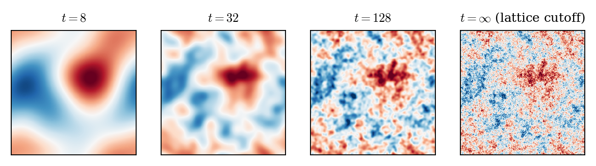
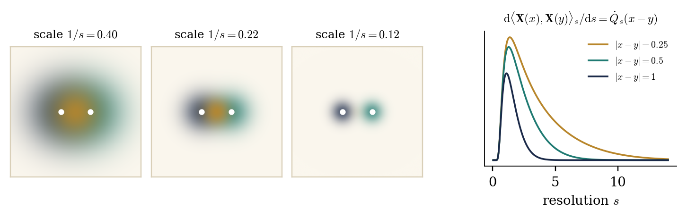

A Constructive Introduction to Quantum Field Theory
Stochastic quantisation and stochastic observables
Massimiliano Gubinelli | University of Oxford
SISSA lectures, Lecture 3 — notes: Lecture 3, §§4–6
So far. A Euclidean field is a measure on \(\mathcal{S}' (\mathcal{M})\); the GFF \(\mu_m\) is its Gaussian part; local operators are functions of \(\varphi\). Wick powers \(: \varphi^n\): are random distributions iff \(n (d - 2) < d\), and not even tight otherwise.
Today. The GFF as an equilibrium; then index everything by a resolution \(t \in [0, \infty)\).
Stochastic quantisation: the GFF as the stationary marginal of a Langevin dynamics, and as the one-point marginal of an elliptic equation.
The GFF as the terminal value of a martingale of smooth fields; observables \(=\) martingales.
Observables of the GFF: Wick powers in every dimension; products and OPE.
Parabolic stochastic quantisation
Lecture 3
Finite dimensions: \(\mathrm{d} X_t = - \nabla S (X_t) \mathrm{d} t + \sqrt{2} \hspace{0.17em} \mathrm{d} B_t\) has generator \(\mathcal{L}= \Delta - \nabla S \cdot \nabla\) and
the Gibbs measure \(\mathrm{e}^{- S} \mathrm{d} x / Z\) is invariant.
Apply this to the Euclidean action, with a fictitious stochastic time \(t\):
\(\xi\) space-time white noise: \(\mathbb{E} [\xi (u) \xi (v)] = \langle u, v \rangle_{L^2 (\mathbb{R} \times \mathcal{M})}\). (stationary solutions)
For \(V = 0\): the stochastic heat equation (infinite-dimensional OU process).
History: Parisi–Wu 1981 (gauge theories without gauge fixing); physics review Damgaard–Hüffel 1987–88; first mathematical construction for \(P (\varphi)_2\) on \(\mathbb{T}^2\): Jona-Lasinio–Mitter 1985. Review: Gubinelli, Encyclopedia of Mathematical Physics 2025.
Itô's formula: for \(F = g (\varphi (f_1), \ldots, \varphi (f_n))\) the generator is
Proposition. \(\mathbb{E}_{\mu_m} [G \hspace{0.17em} \mathcal{L}F] = -\mathbb{E}_{\mu_m} [\langle DG, DF \rangle_{L^2 (\mathcal{M})}]\) for \(F, G \in \mathcal{F}C^{\infty}_b\); in particular \(\mathbb{E}_{\mu_m} [\mathcal{L}F] = 0\).
Proof. Apply DS to \(k \hspace{0.17em} \partial_i g\) with \(h = f_i\) and sum over \(i\):
Static (DS) and dynamic (Langevin) characterisations are two faces of the same integration by parts.
Theorem. For \(t \in \mathbb{R}\), \(f \in \mathcal{S} (\mathcal{M})\) let \(\Phi_t (f) = \sqrt{2} \hspace{0.17em} \xi (K_{t, f})\), \(K_{t, f} (r, x) = \mathbb{1}_{r < t} (\mathrm{e}^{- (t - r) A} f) (x)\).
\(\mathbb{E} [\Phi_t (f) \Phi_s (g)] = \langle f, \mathrm{e}^{- |t - s|A} Cg \rangle\): stationary, and \(\text{Law} (\Phi_t) = \mu_m\) for every \(t\).
\(\Phi\) is a mild and weak solution: for \(s < t\), \(\Phi_t (h) = \Phi_s (h) - \int_s^t \Phi_r (Ah) \mathrm{d} r + \sqrt{2} \hspace{0.17em} \xi (\mathbb{1}_{(s, t)} \otimes h)\).
From any initial datum \(\Psi_0 \in \mathcal{S}' (\mathcal{M})\) independent of \(\xi\): \(\mathbb{E} \hspace{0.17em} \mathrm{e}^{\mathrm{i} \Psi_t (f)} \to \mathrm{e}^{- \frac{1}{2} \langle f, Cf \rangle}\). Hence \(\mu_m\) is the unique invariant measure.
Proof of (a). \(\langle K_{t, f}, K_{s, g} \rangle = \int_{- \infty}^{t \wedge s} \langle f, \mathrm{e}^{- (t + s - 2 r) A} g \rangle \mathrm{d} r = \langle f, \mathrm{e}^{- |t - s|A} (2 A)^{- 1} g \rangle\); an \(\mathcal{S}'\)-valued version exists by Itô–Nawata/Mitoma regularisation.
(a), on \(\mathbb{T}^d\). The modes \(\Phi_t (e_n)\) are independent stationary OU processes \(\mathrm{d} X = - \lambda_n X \mathrm{d} t + \sqrt{2} \mathrm{d} B\) with variance \(\lambda_n^{- 1}\).
(b) Mild form from the semigroup identity \(K_{t, h} = K_{s, \mathrm{e}^{- (t - s) A} h} + \mathbb{1}_{(s, t)} \mathrm{e}^{- (t - \cdot) A} h\); weak form by stochastic Fubini (Exercise 4.3).
(c) By independence,
For \(m > 0\), \(\mathrm{e}^{- tA} f \to 0\) in \(\mathcal{S} (\mathcal{M})\), so \(\Psi_0 (\mathrm{e}^{- tA} f) \to 0\) a.s. If \(\Psi_0 \sim \mu_m\) the product is exactly \(\mathrm{e}^{- \frac{1}{2} \langle f, Cf \rangle}\) (invariance); an invariant \(\nu\) must have the same characteristic functional.
As a field on \(\mathbb{R} \times \mathcal{M}\), the stationary solution has covariance \(2 (\partial_t + A)^{- 1} (- \partial_t + A)^{- 1} = 2 (- \partial_t^2 + A^2)^{- 1}\); its equal-time slice is \(2 \int_{\mathbb{R}} (\theta^2 + A^2)^{- 1} \frac{\mathrm{d} \theta}{2 \pi} = A^{- 1}\).
The stochastic time \(t\) has nothing to do with the Euclidean time \(\tau\).
Interacting case: a singular SPDE.
\(\Phi^4_2\): Da Prato–Debussche 2003 (also Jona-Lasinio–Mitter, Albeverio–Röckner).
\(\Phi^4_3\): Hairer 2014; Gubinelli–Imkeller–Perkowski 2015; Catellier–Chouk 2018.
Global bounds: Mourrat–Weber 2017; Gubinelli–Hofmanová 2019; construction of Euclidean \(\Phi^4_3\) via the dynamics: Gubinelli–Hofmanová 2021.
Elliptic stochastic quantisation
Lecture 3
The elliptic SPDE in \(d + 2\) dimensions
is related to the \(d\)-dimensional Gibbs measure: formally
Mechanism: a hidden supersymmetry (Parisi–Sourlas; Klein–Landau–Perez 1984).
Rigorous nonlinear results: \(d = 0\) (Albeverio–De Vecchi–Gubinelli 2020); polynomial on \(\mathbb{T}^2\) and exponential on \(\mathbb{R}^2\) (ADG 2021); elliptic \(\Phi^4\) in 4 and 5 dimensions (Gubinelli–Hofmanová 2019).
For \(V = 0\) it is elementary, and it explains the \(4 \pi\).
Theorem. Let \(\textsf{L} = m^2 - \Delta_{\mathbb{R}^2 \times \mathcal{M}} = - \Delta_{\mathbb{R}^2} + A\) and \(\zeta\) white noise on \(\mathbb{R}^2 \times \mathcal{M}\).
\(\textsf{L} \Psi = \sqrt{4 \pi} \hspace{0.17em} \zeta\) has a unique tempered solution \(\Psi (u) = \sqrt{4 \pi} \hspace{0.17em} \zeta (\textsf{L}^{- 1} u)\).
\(K_{z, f} = \textsf{L}^{- 1} (\delta_z \otimes f) \in L^2\), continuous in \(z\); \(\Psi (z, f) = \sqrt{4 \pi} \hspace{0.17em} \zeta (K_{z, f})\) is the section of \(\Psi\) at \(z\).
\(\mathbb{E} [\Psi (z, f) \Psi (z, g)] = \langle f, Cg \rangle\): every section has law \(\mu_m\), and \((\Psi (z, \cdot))_{z \in \mathbb{R}^2}\) is stationary and isotropic.
Uniqueness: \(\textsf{L}\) maps \(\mathcal{S}\) onto \(\mathcal{S}\), so \(D (\textsf{L} u) = 0\) \(\forall u\) forces \(D = 0\).
Fourier transform in \(z\) only: \(\widehat{K_{z, f}} (q) = \mathrm{e}^{- \mathrm{i} q \cdot z} (|q|^2 + A)^{- 1} f\). By Plancherel and the spectral theorem,
since
Multiply by \(4 \pi\). Stationarity and isotropy: the covariance \(4 \pi \int \mathrm{e}^{\mathrm{i} q \cdot (z - z')} \langle f, (|q|^2 + A)^{- 2} g \rangle \frac{\mathrm{d} q}{(2 \pi)^2}\) depends only on \(|z - z' |\).
Field on \(\mathbb{R}^k \times \mathcal{M}\) with covariance \((- \Delta_{\mathbb{R}^k} + A)^{- p}\); its slice \(\{0\} \times \mathcal{M}\) has covariance
| \((k, p)\) | slice covariance | interpretation |
| \((1, 1)\) | \(\frac{1}{2} A^{- 1 / 2}\) | time-zero field, \((2 \omega)^{- 1}\) |
| \((2, 2)\) | \((4 \pi)^{- 1} A^{- 1}\) | elliptic stochastic quantisation |
| \((1, 1), A \to A^2\) | \(2 (- \partial_t^2 + A^2)^{- 1} \to A^{- 1}\) | Langevin dynamics |
| \((1, 2)\) | \(\propto A^{- 3 / 2}\) | not a GFF |
The GFF arises iff \(p = 1 + \frac{k}{2}\). For \(\mathcal{M}=\mathbb{R}^d\), every codimension-two slice of the elliptic field is a GFF.
Wilson–Kadanoff: physics is organised scale by scale. The measure-on-\(\mathcal{S}'\) picture hides this, and forces singular objects from the start.
Observe the field at resolution \(t\): a smooth function \(\varphi_t\). Information at resolution \(t\): \(\mathcal{F}_t = \sigma (\varphi_s : s \leqslant t)\).
A physical quantity is not a random variable but a consistent family of finite-resolution estimates, i.e. a martingale.
Slogan
Observables are martingales in the filtration of finite-resolution measurements. They need not have a terminal value.
Setting: covariance profiles and observables
Lecture 3
Definition. A covariance profile is a family \((Q_t)_{t \geqslant 0}\) of symmetric, translation invariant operators with \(Q_0 = 0\), \(\dot{Q}_t := \partial_t Q_t \geqslant 0\), \(Q_t \to C = (m^2 - \Delta)^{- 1} = A^{- 1}\), and smooth kernels for \(t < \infty\).
Heat profile:
\(\dot{Q}_t\) lives on distances \(\lesssim 1 / t\); \(Q_t\) keeps the modes \(|k| \lesssim t\): \(t\) is a momentum scale.
Others: sharp Fourier cutoff \(\mathbb{1}_{|k| \leqslant t} (|k|^2 + m^2)^{- 1}\); finite range decompositions, \(\dot{Q}_t (x, y) = 0\) for \(|x - y| \geqslant 1 / t\).
Notation: \(c_t = Q_t (x, x)\), \(Q_{T, t} = Q_T - Q_t\). For \(d \geqslant 2\), \(c_t \to \infty\) (\(\frac{1}{2 \pi} \log t\) in \(d = 2\), \(\asymp t^{d - 2}\) in \(d \geqslant 3\)).
\(W\) cylindrical Brownian motion on \(L^2 (\mathcal{M})\),
Proposition. \(X_t\) is a smooth Gaussian field, \(\text{Law} (X_t) = \mu^{Q_t}\); \((X_t (x))_t\) is a continuous martingale with \(\mathrm{d} \langle X (x), X (y) \rangle_t = \dot{Q}_t (x, y) \hspace{0.17em} \mathrm{d} t\); \(X_t \to X_{\infty}\) in \(H^{- s}_{\text{loc}}\), \(s > \frac{d}{2} - 1\), with \(\text{Law} (X_{\infty}) = \mu_m\); \(X_T - X_t \perp \mathcal{F}_t\), with law \(\mu^{Q_{T, t}}\).
The GFF is the terminal value of a Gaussian martingale of smooth fields.
Proof (torus). \(X_t = \sum_n \left( \int_0^t \dot{q}_n (s)^{1 / 2} \mathrm{d} B^n_s \right) e_n\): independent Gaussian martingales, variance \(q_n (t) \uparrow q_n (\infty)\); then as in Lecture 2.

The martingale reveals finer and finer details; the large scales are fixed at low resolution.
\(\mathbb{E}_t =\mathbb{E} [\hspace{0.17em} \cdot \hspace{0.17em} |\mathcal{F}_t]\).
Definition. (Bailleul–Chevyrev–G.) An observable is an \((\mathcal{F}_t)\)-martingale \(O = (O_t)_{t \geqslant 0}\). Its expectation is \(\langle O \rangle =\mathbb{E}O_t\). An observable field is a family \((O (x))_{x \in \mathcal{M}}\).
\(Y \in L^1 (\mathcal{F}_{\infty})\) gives a closed observable \(O_t =\mathbb{E}_t Y\).
The point: observables need not be closed. \(X_t (x)\), \(d \geqslant 2\), diverges, yet is a perfectly good family of estimates.
Lemma. (Asymptotic uniqueness) (a) \(\|O^1_t - O^2_t \|_{L^1} \to 0 \Rightarrow O^1 = O^2\).(b) \(N\) adapted, \(\|N_t - O_t \|_{L^1} \to 0 \Rightarrow O_s = \lim_t \mathbb{E}_s N_t\).
Proof. \(\mathbb{E}_s\) is an \(L^1\) contraction.
Two integrable adapted processes are asymptotically equivalent if
A class contains at most one martingale: if
When it exists, it is recovered by looking back: \(O_s = \lim_{t \to \infty} \mathbb{E}_s N_t\) in \(L^1\), for any \(N\) in the class.
An observable \(=\) a class containing a martingale; its members are descriptions, the martingale is the canonical representative.
Random variables sit inside. For \(Y \in L^1 (\mathcal{F}_{\infty})\),
is injective (\(\mathbb{E}_t Y \to Y\) in \(L^1\)), with image the uniformly integrable martingales: the closed observables.
Observables generalise \(L^1\) random variables. Removing uniform integrability enlarges the space; an almost sure limit alone need not determine the observable.
For a standard Brownian motion \(B\) and the Hermite polynomials \(H_n (a ; c)\) of variance \(c\), the martingales
are observables without a terminal value, and not even bounded in \(L^1\):
They sum up to the exponential martingale (\(\lambda \in \mathbb{R}, \lambda \neq 0\)):
since \(\lambda B_t - \lambda^2 t / 2 \sim - \lambda^2 t / 2 \to - \infty\). The mass escapes to rarer and rarer paths.
The limiting random variable is zero; the observable is not. A point value \(X_t (x)\) of the GFF is a Brownian motion run with the clock \(c_t\): these are the prototypes of the Wick powers \(H_n (X_t (x) ; c_t)\).
Proposition. Let \(N_t = N_0 + \int_0^t \beta_s \mathrm{d} s + M_t\), with \(N_0 \in L^1\), \(M\) a martingale and \(\mathbb{E} \int_0^{\infty} | \beta_s | \mathrm{d} s < \infty\). The only observable with \(\|N_t - O_t \|_{L^1} \to 0\) is
Proof. \(O_t = N_0 + M_t +\mathbb{E}_t \int_0^{\infty} \beta_s \mathrm{d} s\) is a martingale, and \(\|O_t - N_t \|_{L^1} \leqslant \mathbb{E} \int_t^{\infty} | \beta_s | \mathrm{d} s \to 0\); uniqueness is asymptotic uniqueness.
Example. \(N_t = B_t + \mathrm{e}^{- t} \sin B_t\). Itô: \(\beta_t = - \frac{3}{2} \mathrm{e}^{- t} \sin B_t\), and \(\mathbb{E}_t \sin B_s = \mathrm{e}^{- (s - t) / 2} \sin B_t\), so
This is the germ of the forward–backward equations: in Lecture 4 the forecast \(\psi_t =\mathbb{E}_t \Phi_T\) is the field plus the expected drift still to come.
Fix \(T > 0\), \(y \in \mathbb{R}\), the heat kernel \(p_s (w) = (2 \pi s)^{- 1 / 2} \mathrm{e}^{- w^2 / 2 s}\), and
Martingale: \(\mathbb{E}_s \Pi^y_t = \Pi^y_s\) for \(s \leqslant t\), by Chapman–Kolmogorov \(p_{t - s} \ast p_{T - t} = p_{T - s}\).
Density of \(B_T\): \(\int g (y) \Pi^y_t \mathrm{d} y =\mathbb{E}_t g (B_T)\) for bounded \(g\), by the Markov property.
Singular: at fixed \(y\), \(\Pi^y_t \to 0\) almost surely as \(t \uparrow T\), since \(B_T \neq y\) a.s.; but \(\mathbb{E} \Pi^y_t = p_T (y) > 0\).
Mass one: \(y \mapsto \Pi^y_t\) is a probability density for every \(t < T\), so \((\Pi^y)_y\) is a measure-valued observable, although each \(\Pi^y_t\) tends to zero.
\(\delta (B_T - y)\) is not a random variable, but it is an observable: the family of its conditional densities. Its derivatives \(\partial_y^k \Pi^y\) are observables too.
High resolution means \(t \uparrow T\); reparametrise by \((T - t)^{- 1}\) to get \([T^{- 1}, \infty)\). The same works for any Markov process with a transition density.
An observable is determined by its asymptotics.
A germ of \(O\): functionals \(\mathring{O}_t\) of smooth fields with \(\|O_t - \mathring{O}_t (X_t)\|_{L^1} \to 0\). A germ determines \(O\).
\(O (x)\) is local if it has germs
Germs are not unique: this freedom is the freedom of choosing counterterms.
Example. \(: X^n_t : (x) = H_n (X_t (x) ; c_t)\) is a local observable in every \(d\) (more later), although \(: \varphi^n\): does not exist as a random distribution when \(n (d - 2) \geqslant d\).
Observables and their products
Lecture 3
Recall \(\partial_c H_n (a ; c) = - \frac{1}{2} \partial_a^2 H_n\), \(\partial_a H_n = nH_{n - 1}\).
Proposition. For every \(d\), \(n\), \(x\): \(: X^n_t : (x) := H_n (X_t (x) ; c_t)\) is a continuous martingale, \(\mathrm{d} \hspace{0.17em} : X^n_t : (x) = n \hspace{0.17em} : X^{n - 1}_t : (x) \hspace{0.17em} \mathrm{d} X_t (x)\), and
Proof. Itô: the drift is \((\frac{1}{2} \partial_a^2 + \partial_c) H_n \hspace{0.17em} \dot{c}_t = 0\).
Lecture 2: \(: \varphi^n\): exists iff \(n (d - 2) < d\). As observables, Wick powers exist in every \(d\), unsmeared.
For \(n (d - 2) \geqslant d\), \(0 \leqslant f \mathrel{\not\equiv} 0\), \(: X^n_t : (f)\) is unbounded in \(L^2\) and (Paley–Zygmund) not tight: no terminal value; the observable is the whole family.
The singularity has moved to products at coincident points.
Definition. \(O^1 \star O^2\) is the observable with \(\|(O^1 \star O^2)_t - O^1_t O^2_t \|_{L^1} \to 0\); unique, and \((O^1 \star O^2)_s = \lim_t \mathbb{E}_s [O^1_t O^2_t]\).
Proposition. If \(O^1, O^2\) are continuous, square integrable on bounded intervals, and \(\mathbb{E} \int_0^{\infty} | \mathrm{d} \langle O^1, O^2 \rangle_s | < \infty\), then
Proof. \(O^1 O^2 - \langle O^1, O^2 \rangle\) and \(\mathbb{E}_t \langle O^1, O^2 \rangle_{\infty}\) are martingales.
For
Proof. Complete the square: \((B_t - y)^2 + (B_t - z)^2 = 2 (B_t - \bar{y})^2 + \frac{(y - z)^2}{2}\), and use \((2 \pi (T - t))^{- 1} = \kappa_{T - t} (\pi (T - t))^{- 1 / 2}\).
The product is \(\geqslant 0\), so its expectation is its \(L^1\) norm (\(B_t \sim N (0, t)\)):
So \(\Pi^y_t \Pi^z_t \sim 0\): the zero observable is the martingale in its class, hence \(\Pi^y \star \Pi^z = 0\) for \(y \neq z\). At \(y = z\) the exponential suppression disappears, \(\mathbb{E} (\Pi^y_t)^2 = \kappa_{T - t} p_{(T + t) / 2} (y) \to \infty\), and no martingale is in the class: its constant expectation would have to be this divergent limit.
The product depends dramatically on whether the singular supports meet: separated supports multiply to zero, coincident ones call for renormalisation.
Fine resolution \(u = T - \varepsilon\), coarse resolution \(s < u\), \(\kappa_{\varepsilon} = (4 \pi \varepsilon)^{- 1 / 2}\). Since \(p_{\varepsilon} (w)^2 = \kappa_{\varepsilon} p_{\varepsilon / 2} (w)\), Chapman–Kolmogorov gives the exact identity
Taylor expand in the time variable, with \(\partial_{\tau} p_{\tau} = \frac{1}{2} \partial_y^2 p_{\tau}\):
Singular coefficients (\(\kappa_{\varepsilon} \to \infty\); \(\varepsilon \kappa_{\varepsilon}, \varepsilon^2 \kappa_{\varepsilon} \to 0\)) times observables \(\Pi^y, \partial_y^2 \Pi^y, \ldots\): an operator product expansion.
The order of limits matters: fixed coarse resolution \(s\), then \(\varepsilon \downarrow 0\). Without conditioning, \(\|(\Pi^y_{T - \varepsilon})^2 - \kappa_{\varepsilon} \Pi^y_{T - \varepsilon} \|_{L^1} \asymp \varepsilon^{- 1 / 2}\).
\(\langle \textbf{X} (x), \textbf{X} (y) \rangle_t = Q_t (x - y)\) is deterministic. Heat profile, \(d \geqslant 2\): the condition holds iff \(x \neq y\), and then
The correct two-point function, without ever discussing the regularity of \(X_{\infty}\). For \(x = y\): no product, since \(c_t \to \infty\).
OPE. At every fixed resolution, as \(y \to x\),
i.e. \(\textbf{X} (x) \star \textbf{X} (y) = G (x - y) \mathbb{1} + : \textbf{X}^2 : (x) + o (1)\): the Wick square is the regular part of the product.
For \(x \neq y\),
Wick's theorem at the level of observables.
The coefficients \(G (x - y)^j\) carry all singularities; the observables on the right have regular limits as \(y \to x\).
\(O^1, O^2\) with germs supported in \(U^1_{1 / t}\), \(U^2_{1 / t}\), \(\text{dist} (U^1, U^2) > 0\): the covariation \(\langle DO^1_t, \dot{Q}_t \hspace{0.17em} DO^2_t \rangle \mathrm{d} t\) sees \(\dot{Q}_t\) only between the supports.
Finite range decomposition: it vanishes for large \(t\), so the product exists and is asymptotically the pointwise product. Heat profile: exponentially small.
Observables on disjoint regions multiply freely; products at the same point need renormalisation.
Factorisation algebra
This is the structure of a factorisation algebra of observables (precise axioms not established here).
Bauerschmidt–Brydges–Slade, LNM 2242 (finite range decompositions)

Stochastic quantisation: the GFF is the stationary marginal of the parabolic Langevin dynamics and the one-point marginal of the elliptic SPDE.
The GFF is the terminal value of a martingale \(X_t\) of smooth fields; observables are martingales, possibly without terminal value.
Wick observables exist in every dimension; products and the OPE live at finite resolution.
Next
Lecture 4: interactions, the Polchinski equation and its FBSDE, the Wetterich equation.
Exercises (numbering of the notes)
|
Reading
|